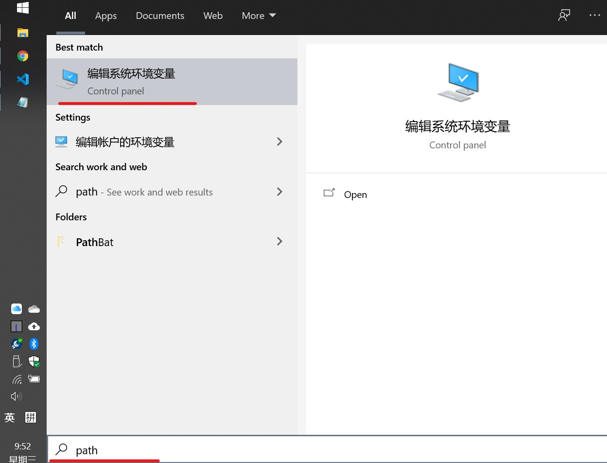

Linux / windows 设置默认 python 版本
windows
搜索 path 点击系统环境变量：

打开环境变量设置：
系统变量里找到 path 点击编辑：
将想要默认版本的 python 路径移动到其他版本前：
注意有两个目录，一个是python 程序目录，还有一个 pip 目录。
也可以使用命令切换使用不同版本的 python。
python 2.x 版：
py -2 xxx.py
py -2 -m pip install xxxxpython 3.x 版：
py -3 xxx.py
py -3 -m pip install xxxx
Linux
先查看系统中有那些Python版本：
ls /usr/bin/python*
再查看系统默认的Python版本：
python --version
Python 2.7.12
先删除默认的Python软链接：
rm /usr/bin/python
然后创建一个新的软链接指向需要的Python版本：
ln -s /usr/bin/python3.4 /usr/bin/python
标签：python